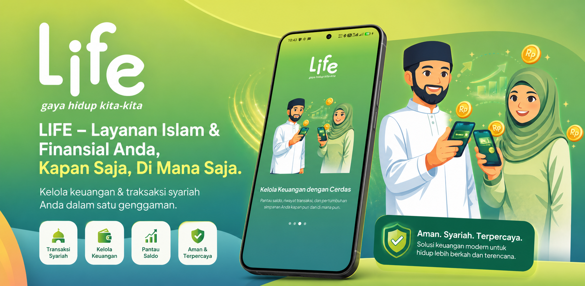

Berikut panduan dan langkah-langkah agar proses migrasi berjalan dari M_TAMZIS ke LIFE berjalan lancar.

Syarat Migrasi
- 1.M-TAMZIS sudah terpasang pada perangkat dan sudah terdaftar dengan status Aktif.
- 2.Versi M-TAMZIS minimal 1.11.6
Langkah-langkah Migrasi
Buka M-TAMZIS.
Masuk ke halaman utama M-TAMZIS menggunakan sidik jari atau PIN yang terdaftar.
Jika LIFE belum terpasang pada perangkat lanjut ke langkah 5.
Jika LIFE sudah terpasang pada perangkat lanjut ke langkah 8.
-
Informasi migrasi akan tampil, seperti pada gambar. Klik tombol Unduh LIFE di Play Store.

Akan masuk ke Play Store dan klik Pasang/Install.
Selesai Pasang/Install kembali lagi ke M-TAMZIS.
-
Informasi migrasi akan tampil, seperti contoh pada gambar. Klik tombol Mulai Migrasi.

Konfirmasi proses migrasi menggunakan sidik jari atau PIN.
Setelah konfirmasi berhasil, Anda akan diarahkan masuk ke LIFE.
Pastikan data M-TAMZIS Anda sudah benar.
Masukkan nomor HP aktif Anda.
Buat PIN baru untuk akun LIFE. Disarankan untuk menggunakan PIN yang berbeda dari PIN M-TAMZIS.
Migrasi selesai, LIFE siap digunakan.